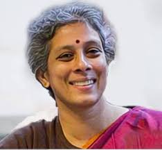

Sujata Ramdorai:
Sujatha Ramdorai (born 1962)[1] is an algebraic number theorist known for her work
on Iwasawa theory. She is a professor of mathematics and Canada Research Chair at
University of British Columbia, Canada.[2][3] She was previously a professor at Tata
Institute of Fundamental Research.
Education
She completed her B.Sc. in 1982 at St. Joseph's college, Bangalore and then got her
M.Sc. through correspondence from Annamalai University in 1985. After that she went
for PhD at Tata Institute of Fundamental Research and was awarded her PhD under
supervision of Raman Parimala in 1992.[4] Her dissertation was "Witt Groups of Real
Surfaces and Real Geometry".
Awards and honors
Ramdorai became the first Indian to win the prestigious ICTP Ramanujan Prize in 2006.
She was also awarded the Shanti Swarup Bhatnagar Award, the highest honour in scientific
fields by the Indian Government in 2004.[11] She is also the recipient of the 2020
Krieger–Nelson Prize for her exceptional contributions to mathematics research.[12]
She has been bestowed with Padma Shri award by the Government of India for 2023 in the
field of science and engineering.[13]
